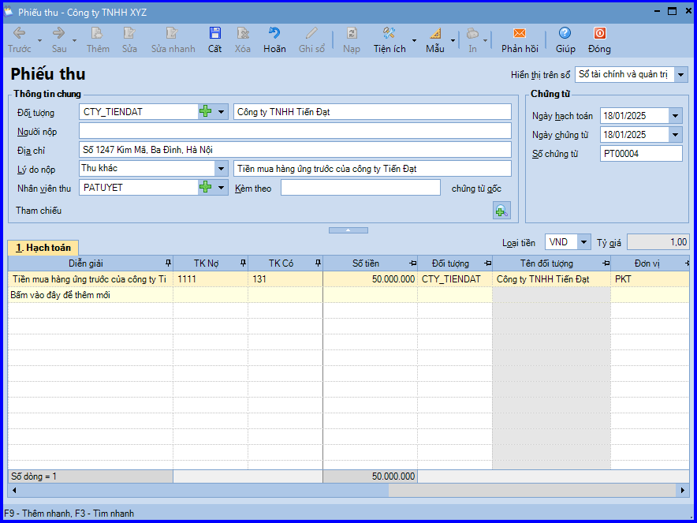
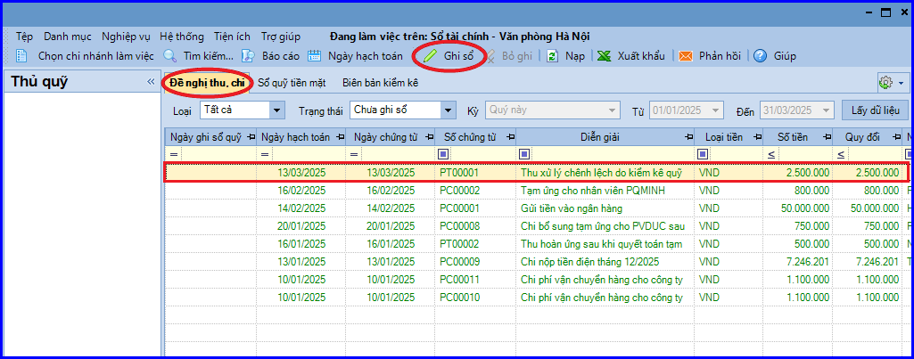

Hướng dẫn cách hạch toán ghi sổ nghiệp vụ nhận tiền ứng trước của khách hàng bằng tiền mặt trên phần mềm Misa
Trường hợp khách hàng ứng trước tiền mua hàng bằng tiền mặt, sẽ phát sinh các hoạt động sau:
- Sau khi nhận được tiền ứng trước của khách hàng, nhân viên sẽ yêu cầu kế toán thanh toán lập Phiếu thu.
- Thủ quỹ sẽ căn cứ vào Phiếu thu để thu tiền mặt, đồng thời ghi sổ quỹ.
- Kế toán thanh toán căn cứ vào Phiếu thu có chữ ký của thủ quỹ và người nộp tiền để ghi số kể toán tiền mặt.
1. Cách định khoản hạch toán nhận tiền ứng trước của khách hàng bằng tiền mặt
- Nợ TK 111 Tiền mặt (1111, 1112)
- Có TK 131 Phải thu của khách hàng
2. Các bước hạch toán ghi sổ nghiệp vụ nhận tiền ứng trước của khách hàng bằng tiền mặt trên phần mềm Misa
- Vào phân hệ "Quỹ" => chọn tab "Thu, chi tiền" => chọn "Thêm\Thu tiền".
- Chọn lý do nộp là "Thu khác".

- Khai báo thông tin chứng từ, sau đó ấn "Cất".
- Chọn chức năng "In" trên thanh công cụ, sau đó chọn mẫu phiếu thu cần in.
CHÚ Ý:
+ Trường hợp Thủ quỹ có tham gia sử dụng phần mềm, sau khi phiếu thu tiền ứng trước của khách hàng được lập, chương trình sẽ tự động sinh ra phiếu thu trên tab "Đề nghị thu, chi"của Thủ quỹ.
+ Thủ quỹ sẽ thực hiện ghi sổ phiếu thu vào sổ quỹ như sau:
+ Thủ quỹ sẽ thực hiện ghi sổ phiếu thu vào sổ quỹ như sau:
a. Đăng nhập vào phần mềm với vai trò Thủ quỹ.
b. Chọn tab "Đề nghị thu, chi" và lọc ra các chứng từ có trạng thái "Chưa ghi sổ".
c. Chọn phiếu thu/phiếu chi (sử dụng phím Ctrl + A để chọn toàn bộ phiếu thu, chi hoặc sử dụng phím Ctrl + click chuột trái để chọn một số phiếu thu, chi trên danh sách), sau đó ấn "Ghi sổ".

d. Chọn hình thức ghi sổ theo ngày hạch toán trên chứng từ hay theo ngày tùy chọn.
e. Các bạn ấn "Ghi sổ" => chương trình sẽ tự động ghi thông tin các phiếu thu/chi và sổ quỹ tiền mặt của Thủ quỹ.
.png)
KẾ TOÁN DIỆU TÂM chúc các bạn làm tốt!
=============================
Nếu bạn muốn thành thạo các kỹ năng làm kế toán trên phần mềm Misa
Thì bạn có thể tham khảo "Khóa Học Thực Hành Kế Toán Trên Phần Mềm Misa" tại Công ty đào tạo Kế Toán Diệu Tâm
Trong khóa học này, bạn sẽ được dạy cách lên sổ sách, lập báo cáo tài chính trên phần mềm Misa
Chi tiết về chương trình đào tạo bạn xem tại đây nhé: Khóa học thực hành kế toán trên Misa
=============================